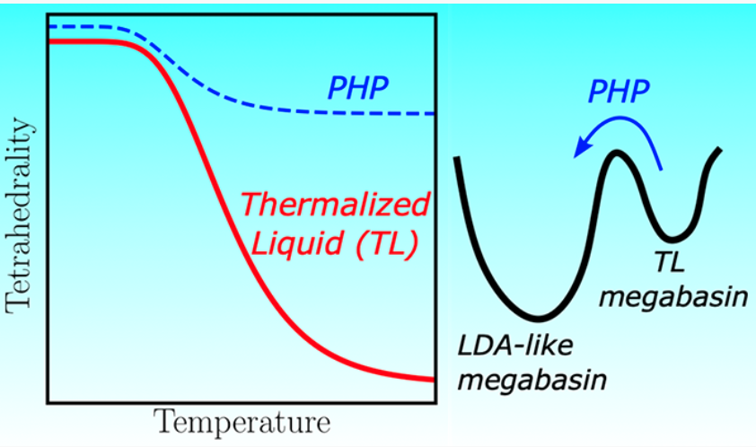
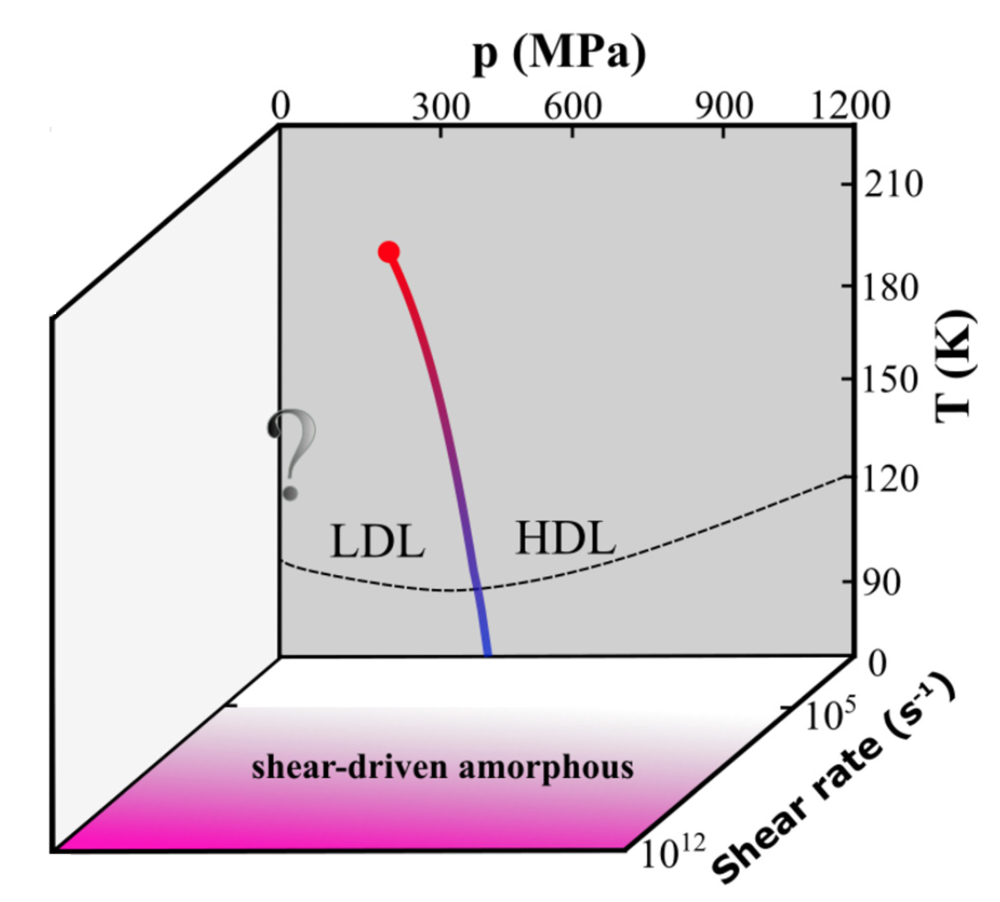
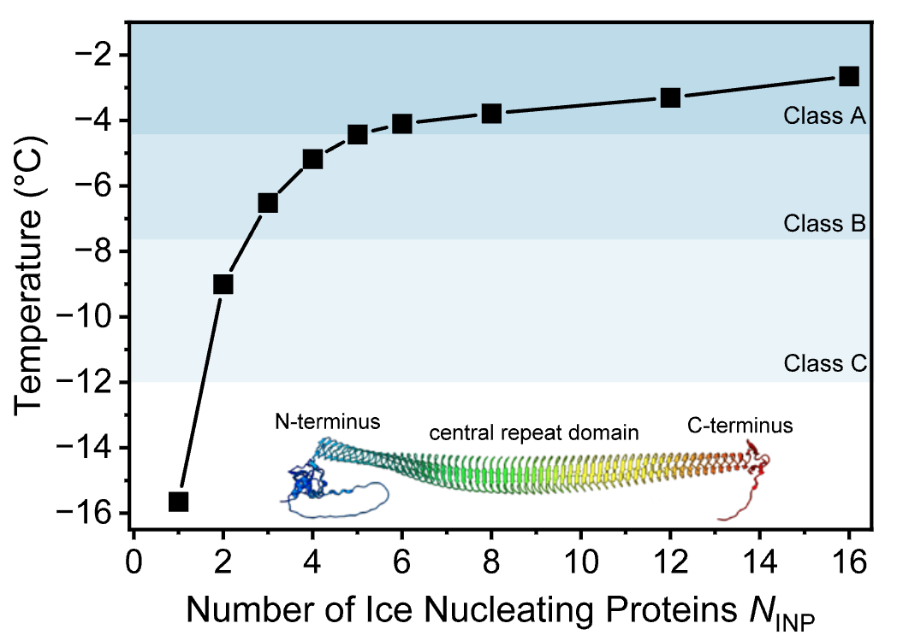
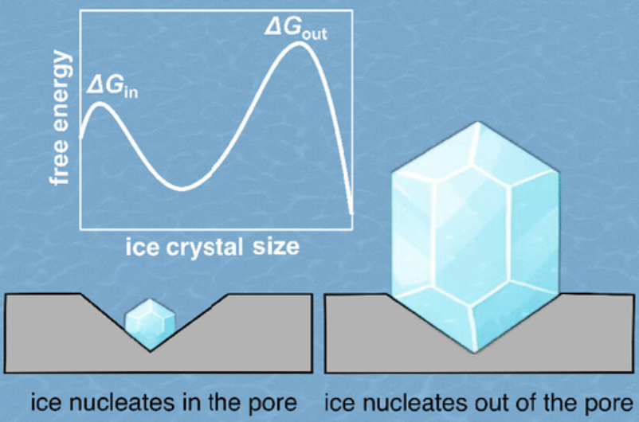
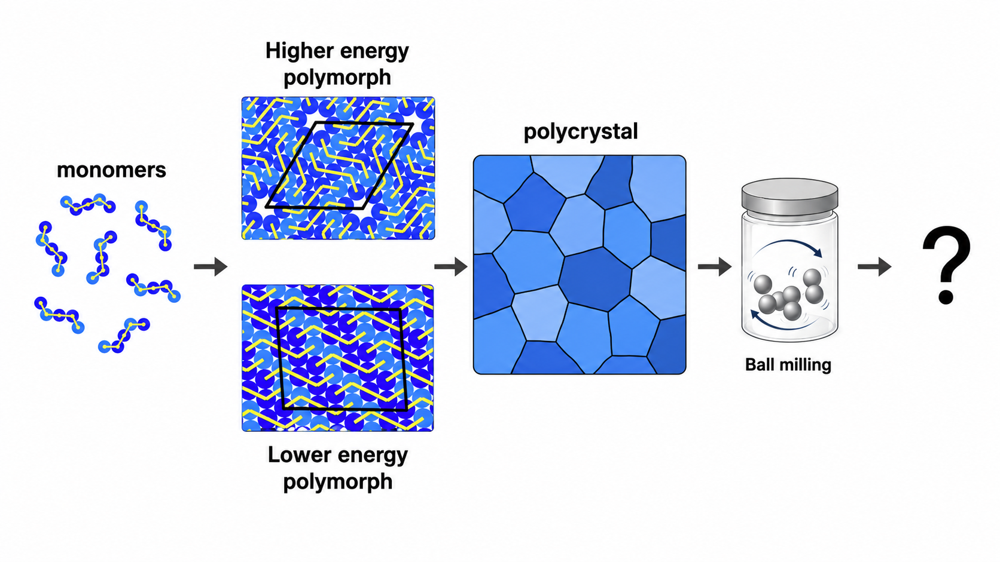

Academic Background
Postdoctoral Researcher, University of Utah, USA (2021–Present)
Ph.D. in Physics, University of Campinas (UNICAMP), Brazil (2017–2021)
M.S. in Physics, University of Campinas (UNICAMP), Brazil (2015–2017)
B.S. in Physics, Federal Fluminense University (UFF), Brazil (2010–2015)
Visiting Research Program, University of Manitoba, Canada (2014)
Current Research
I am a Postdoctoral Researcher at the University of Utah, where I study the thermodynamics, kinetics, and molecular mechanisms of ice formation and water’s phase behavior. My recent work includes theoretical and computational studies of homogeneous and heterogeneous ice nucleation, including ice formation promoted by ice-nucleating proteins from bacteria, fungi, and lichens, as well as simulations of topographical active sites, non-equilibrium relaxation in deeply supercooled water, and amorphous ice transformations. These studies are relevant to atmospheric science, cryopreservation, and the physics of metastable liquids. I have contributed to high-impact publications in journals such as The Journal of Physical Chemistry Letters, Proceedings of the National Academy of Sciences, and the Journal of the American Chemical Society.




More recently, I have been working on 2D molecular crystals relevant to pharmaceutical manufacturing. I use molecular simulations to understand how crystal polymorphs transform under mechanical deformation, such as the stresses present during ball milling. The goal is to identify how external forces control polymorphic transformations, and amorphization pathways in models of chiral molecules.
